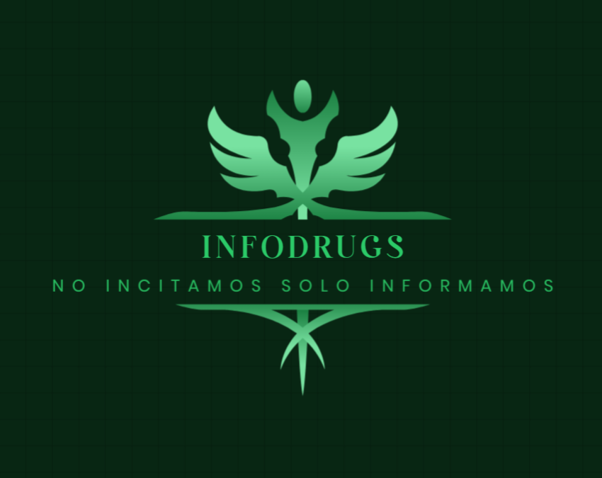

Tipos de consumibles
Necesitas ayuda?
Tipos de consumibles
Necesitas ayuda?

En Infodrugs somos un equipo sin animo de lucro, dedicado a proporcionar información clara, precisa y basada en evidencia sobre el uso de drogas y sustancias psicoactivas. Nuestro propósito es promover la salud y el bienestar de la sociedad a través de la educación y la sensibilización. Ofrecemos contenido accesible y actualizado que permite a las personas comprender los riesgos, efectos y consecuencias del consumo de drogas, ayudando a tomar decisiones informadas. Nos enfocamos en la prevención, brindando recursos educativos y apoyando programas de concientización para enfrentar de manera efectiva los desafíos relacionados con las sustancias. Trabajamos en colaboración con expertos en salud, adicciones y organizaciones especializadas para crear un impacto positivo en la comunidad. Nuestra plataforma busca ser un referente de confianza para aquellos que buscan información responsable y orientada al bienestar. En Infodrugs, nos comprometemos a generar un entorno de conocimiento, apoyo y prevención que permita mejorar la calidad de vida de las personas.
|
Este sitio web tiene carácter informativo y educativo sobre las drogas, sus efectos, riesgos y prevención. La información aquí proporcionada no sustituye el consejo médico, psicológico ni profesional. El propietario del sitio no se responsabiliza por los daños derivados del uso de la información, y se recomienda que los usuarios consulten a profesionales para obtener orientación sobre el consumo de sustancias. El contenido de este sitio no busca promover ni incitar el consumo de drogas, ya sean legales o ilegales. Su propósito es sensibilizar sobre los riesgos asociados con las sustancias y fomentar la prevención. El sitio puede incluir enlaces a páginas externas, pero el propietario no se hace responsable del contenido ni de las políticas de privacidad de dichos sitios. El propietario se compromete a proteger la privacidad de los usuarios conforme a las leyes de protección de datos vigentes. Para más detalles, consulte la Política de Privacidad. |
Si estás bajo la adicción de las sustancias estupefacientes desde hace tiempo y no sabes como salir de esa adversidad pide ayuda. Nosotros te proporcionamos un formulario en nuestra página web para que nos cuentes tu situación y así nosotros poder valorar y comunicar las opciones que más te convengan para desintoxicarse. Con esa información que proporcionas en el formulario nos ponemos en contacto con la empresa correspondiente y te ayudaremos a hacer los trámites necesarios para comenzar el tratamiento de desintoxicación. |